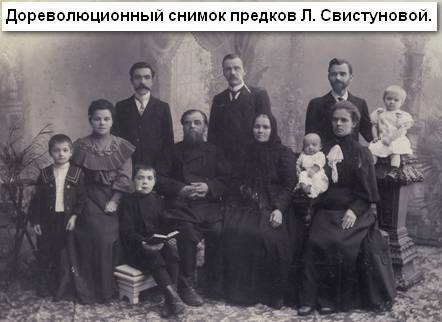
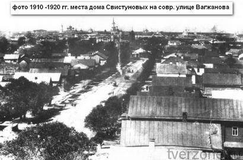
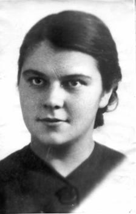
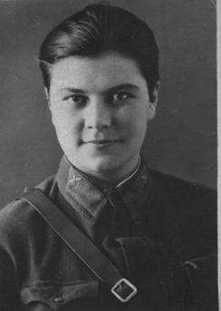
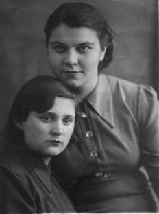

| |
Мы вовсе не тени безмолвные,
Мы ветер и крик журавлей,
Погибшие в небе за Родину
Становятся небом над ней.
Е. Евтушенко |
Б.Ершов,А.Власов,В.Галочкин
Лётчица – героиня из Твери.
«В Краснодаре на площади имени Ленинского комсомола похоронена лётчица Евдокия Носаль, которая первой в полку была удостоена звания Героя Советского Союза. С ней в одной могиле покоятся командир 3 – й орденоносной эскадрильи Полина Макогон, штурман этой эскадрильи Лидия Свистунова и лётчица Юля Пашкова, которые погибли майской цветущей весной 1943 года в небе Кубани. Они летали бомбить «Голубую линию» противника, его последний оплот на Кубанской земле».
Инна Кутуева Из книги «Верность».
От авторов.Приносим благодарность Аскольду Львовичу Власову за помощь в разработке материалов очерка, за правки и замечания по существу изложения.
Из перечисленных лётчиц 46 – го Гвардейского Таманского женского авиационного орденов Красного Знамени и Суворова III степени полка ночных бомбардировщиков расскажем о нашей землячке Лидии Свистуновой. Помнят ли о ней жители Твери?
Некоторое время назад Тверь проводила в последний путь прославленную лётчицу, Героя Советского Союза Марию Смирнову – командира 3 – й эскадрильи 46 – го Гвардейского Таманского женского авиаполка ночных бомбардировщиков. Она совершила более 900 боевых вылетов, награждена многочисленными государственными наградами вплоть до «звёзды Героя», прожила долгую и достойную жизнь (Мария Смирнова родом из д. Воробьёво Лихославльского района). В Твери считали её единственной представительницей нашей области в славной плеяде героических девушек – лётчиц, названных немцами «ночными ведьмами». Но это не совсем так: должность командира 3 – й эскадрильи Мария Смирнова заняла после гибели командира этой эскадрильи Полины Макогон и штурмана Лидии Свистуновой, уроженки Твери.
Лидия Свистунова не имела звания Героя Советского Союза, но, по совести говоря, она и тысячи воевавших в Красной Армии других славных женщин достойны называться Героями - героинями войны. Пусть неформально, зато справедливо, так как они воевали за нас, своих потомков. Этим сказано всё. О ней, героине той далёкой войны, настоящий рассказ.
Родилась Лида Свистунова в Твери, в 1920 году, 27 января, на улице Ямской, ныне улица Вагжанова.
Дом родителей, старинный, деревянный, украшенный резьбой на наличниках стоял шестым от Смоленского переулка, хотя номер имел 12. Выкрашен он был в светло – бежевый цвет, за забором рос высокий старый клён. Дом простоял до 1960 – х годов, когда его снесли при реконструкции улицы Вагжанова. Сейчас там зелёная зона перед средней школой № 10. Дед и прадед Свистуновых сапожничали, хозяйкой в доме была бабушка Татьяна Алексеевна, урождённая Волкова, по семейному преданию далёкий потомок известного тверского купца Афанасия Никитина. Это в семье
Семья Волковых - Свистуновых – три поколения, фото 1906 г. утверждалось вполне серьёзно.
Родители Лиды – отец Александр Михайлович и мать Анна Григорьевна были обыкновенными тверитянами. Отец, отслужив сначала в царской, затем в Красной Армии положенный срок, списан был в запас в 1927 году в возрасте 33 лет. Работал калькулятором, это одна из забытых ныне бухгалтерских специальностей. Несмотря на «простоту» был разносторонне развитым и любознательным мужчиной, с неуёмной энергией. Мать Анна Григорьевна по происхождению крестьянка, род которой издавна существовал в Черниговской губернии. Будучи в армии, отец познакомился с ней на станции Почеп, влюбился в 17 – летнюю пригожую Анну и вскоре увёз её в Тверь, где они и поженились. После Лиды в семье появилась сестрёнка Инна и братик «Шурёнок», который умер в четырёхлетнем возрасте. Отец Александр Михайлович несмотря на пролетарское происхождение был разносторонне развитым и любознательным человеком с неуёмной энергией. Рано, почти самоучкой выучился играть на фортепиано, мандолине, гитаре, балалайке и басе. Участвовал в концертах городского самодеятельного оркестра, где иногда солировал. После него сохранилось множество тетрадей с нотами произведений классической и популярной музыки собственноручно написанных или переписанных. Увлечение литературой привело к образованию в доме приличной библиотеки русской классики, приобретённой в основном по подписке.
Будучи мастером на все руки. Оборудовал в доме мастерскую, там делал мебель для дома и сада. В саду соорудил беседку и теплицу с печным отоплением, в которой выращивал помидоры. Успехи в «агрономии» оказались столь значительными, что реализация излишков продукции через кооператив позволило приобрести пианино фирмы Дидерикс. Уже вполне взрослым человеком играл с товарищами на стадионе в футбол, а дома с дочками и племянницами в шахматы и крокет.

Перечисленные качества характера отца не могли не сказаться на формирование личности будущей лётчицы – она любила отца и брала с него пример.
Будущая лётчица начала учиться в неполной средней школе № 4 города Твери, в 1933 году пошла в 7 – й класс этой же школы. Училась хорошо, увлекалась литературой, любовь к ней и к искусству привил преподаватель Иван Алексеевич Соболев. Любила физкультуру, спортивные праздники доставляли ей радость, а потому готовилась к сдаче норм ГТО – «Готов к труду и обороне». Нынешняя молодежь не имеет понятия, что это такое, а тогда, вплоть до 1950 – х годов получить значок ГТО было заветным желанием для многих мальчишек и девчонок. Вспоминает её сестра Инна (ныне Кутуева):
«В школе Лидочка с удовольствием посещала различные кружки. Особенно любила кружок изобразительного искусства, где получала знания о великих художниках и эпохах развития искусства. Меня она тоже учила рисовать, в частности, акварельными красками. У меня как – то с трудом шла эта работа. Сестра говорила мне: «не берись сразу за трудное, начинай с простого».
Любознательность её проявлялась во всём. Открывать в природе что – то неожиданное, или даже анализировать в характере склонности и вкусы людей. А красота увиденного или вновь познанного, казалось, облагораживала её сердце. Иногда я заставала её за рассмотрением старинных журналов или ветхих книг, сложенных в чулане или на чердаке. Понравившиеся она выносила в беседку и внимательно изучала.
Лида была искренней и доброжелательной девушкой, но в то же время решительной, с твердыми убеждениями. Запомнился мне разговор Лиды с подругой, которая упрекала мою сестру за то, что она отказалась от пригласительного билета на московский новогодний бал для молодёжи, сказав, что хочет встречать Новый год дома и чтобы её билет отдали другим. Подруга не понимала её. А мы действительно любили встречать Новый год дома. Папа всегда был массовиком – затейником, а Лидочка умела помогать ему в этом».
В 1934 году Лида продолжила учебу, поступив в 8 – й класс считавшейся образцовой школы № 8. Учителя этой школы: Софья Ниловна Волкова, математик и классный руководитель, тот же словесник Иван Алексеевич Соболев, физичка Анна Филипповна Базанова и другие, многое вложили в сознание любознательной ученицы. На следующий год Лиду приняли в комсомол, в те годы для молодых людей это было знаменательным событием.
Как рождаются лётчики? По – разному. Была бы мечта, желание и возможности. У Лиды этот процесс шёл, видимо, так. Превосходные уроки по астрономии разожгли интерес к небу. Теоретически. А в городском саду Твери, ставшей в 1935 году Калинином, работала парашютная вышка. За дешёвый билетик можно было прыгнуть с парашютом (правда, со страховочным тросом) с высоты более 10 метров. Это уже практические шаги, маленькие, но всё же шаги к небу. Интерес подогревала официальная пропаганда с девизом: «Молодежь – на самолёты!». Авиация, лётчики в те времена в глазах заворожённых людей выглядели так же удивительно, как космонавты в 1960 – х годах. К 10 классу у Лиды сформировалось твёрдое намерение поступить в авиационный институт. Ну а пока она поступила в аэроклуб и всерьёз занялась парашютизмом.
Поступить в аэроклуб помог отец – с его участием Лида оформила необходимые документы. Ну а мать поначалу это занятие не одобрила , всё расспрашивала дочь, как это она не боится прыгать с самолёта и управлять таким малоуправляемым устройством с названием парашют? На что дочь с восторгом делилась впечатлениями: «Ой, мамочка, когда посмотришь вниз, кажется - земля далеко – далеко и долететь до неё невозможно!.. ». «Да, для многих шаг в пятый океан тяжёл. Я знала курсантов, которые не могли выйти на крыло самолёта, так захватывало у них дух. Тугая струя воздуха на крыле одновременно и поддерживает, и переворачивает, давит то снизу, то сверху – со всех сторон. Тут всё зависит от того, как внутренне подготовлен человек – если он себя уверенно чувствует, то все получится. За 5 секунд свободного падения нужно занять правильное положение в пространстве, махнуть рукой лётчику – мол всё в порядке, и рвануть кольцо», - говорила Лида.
Но Лиде хотелось большего – водить крылатую машину, несмотря на то, что девушек на самолётовождение не брали. Но её настойчивость, ходьба по разным инстанциям (представьте, как по кабинетам ходит ученица с косичками!), убедительные аргументы в пользу своего желания сделали своё дело – она добилась приёма на наземные занятия по освоению самолёта.
На всю жизнь, такую короткую и славную, она запомнила первый свой полёт на У – 2, как звенели его расчалки в полёте, с каким напряжением совершала посадку и какое чувство гордости за свой первый шаг в небо она испытала.
21 июня 1937 года состоялся выпускной вечер во всех школах города одновременно. Тогда не принято было устраивать пышные банкеты и одеваться в дорогие платья и костюмы. Всё было внешне проще, но весело и интересно: музыка, танцы, подарки. Лида Свистунова поехала в Москву сдавать документы в авиационный институт. Увы! Её постигла неудача: во – первых, девушек принимали с налётом часов, чего у неё практически не было, во – вторых, хватало и парней, хотевших стать лётчиками. В приёмной комиссии документы ей вернули.
Подруга Лида Синицына пробовала уговорить поступать вместе в медицинский, но Свистунова решила поступать туда, где серьёзно преподавали математику. Так наша героиня стала студенткой экономического института народного хозяйства имени Плеханова. Через год в 1938 году она переехала в Москву, получила место в общежитии, её выбрали комсоргом.
«Я помню, как уехав в Москву учиться в институте, она постаралась досрочно сдать первую экзаменационную сессию, чтобы приехать домой встречать новый, 1939 год. Приехала Лида с разнообразными подарками для всех. На свои скромные студенческие средства подобрала со вкусом каждому сюрприз. Мама как увидела всё, что она привезла, так и взмолилась – мол, ты, наверное, ничего не ела, а всё собирала на подарки. Лидочка ответила, что только отказалась от сладостей и всё. Папе, любившему курить папиросы, привезла машинку для набивания папиросных гильз, большую красивую коробку табака «Золотое руно» и несколько пачек папиросных гильз. Маме привезла какую – то очень оригинальную шапочку. Она маме очень пришлась по вкусу, так как подходила к её причёске с длинными волосами. Эту шапочку мама с любовью носила до самой войны. Как всегда, привезла интересные выкройки Московского дома моделей, и рисунки для вышивок. Всё это помогало маме обшивать семью и отделывать свои изделия вышивкой. А мне привезла в подарок книгу «Искусство Рафаэля». Многое из изображенного в этой замечательной книге, мне было тогда непонятно. Но она стала для меня очень дорогой. Даже потом, когда нам пришлось эвакуироваться из Калинина во время войны, я забрала её с собой. К сожалению, во время бомбёжки эта книга погибла вместе с портфелем и другими нашими вещами. Лишь мы с мамой буквально чудом уцелели, оставшись в разрушенном доме между двух печей. Я потом долго сожалела, что не удалось сохранить этот подарок», - вспоминает сестра Инна.
В 1939 году Лида влюбилась в курсанта аэроклуба из Подмосковья некоего Костю, одновременно студента привилегированного Московского института международных отношений. Он получил назначение по распределению ехать во Францию на дипломатическую работу, но … обязан был быть женатым. Костя делает Лиде предложение, но та со слезами на глазах ему отказывает без объяснения причин. А причина для неё самой была веской: незадолго до этого в 1940 году умер отец, который взял с неё клятву не выходить замуж, пока она не окончит институт. Слово надо было держать даже ценой такой жертвы. Можно себе представить трагедию в душе и дочери, и матери! Об этом пишет сестра Инна:
«Она, верная данному ему слову, отказала любимому, который на два года раньше её заканчивал МГИМО (Московский государственных институт международный отношений) и уже был распределён на работу в посольстве СССР во Франции. А ему, нежно влюблённому в Лидочку, нельзя было ждать, так как обязательно требовалось ехать в Париж с женой. Сожалела мама, что не сумела предотвратить трагедию любви, так как была занята уходом за умирающим Александром Михайловичем. А мама знала об этой любви, хотя письма и открытки Костя писал Лиде на французском языке. Но было понятно – эти письма шли одно за другим сразу, как Лида приезжала домой, имели необычно большой размер. И было видно, как преображался облик сестры после чтения этих писем. Казалось, что всё её существо озарялось светом восторга и восхищения. Глаза светились, и мама понимала, что такое свечение бывает только тогда, когда охватывает человека чувство взаимной любви.
Обычно Лида делилась с мамой своими мыслями, а тут, после очередной встречи с папой в госпитале, не рассказала маме о том, что попросил умирающий папа. И мама не смогла предотвратить разрыв любви, на который решилась Лидочка, пообещав отцу не выходить замуж до окончания института. 22 ноября 1940 года Александр Михайлович умер. Чувство верности данному слову сломало судьбы двух любящих сердец. Лидочка не призналась Косте, почему она отказывает ему, а Костя не приехал поговорить с мамой, так как не знал, в чём причина. Мама всё сожалела, что не смогла предотвратить трагедию своей дочери, так как это совпало с трагедией смерти главы семейства. По-видимому, сожалела мама и о том, что воспитала свою дочь быть верной своему слову даже тогда, когда речь шла о любви. А папа, желая, что дочь станет опорой семьи после его смерти, конечно, не мог предугадать, что на пороге была война, которая унесёт жизнь и его любимой дочери».
Учась в институте, Лида параллельно продолжала заниматься в аэроклубе. Здесь Свистунова становится лётчиком – инструктором с окладом 315 рублей в месяц, деньги небольшие, но всё же какое – то подспорье. Летала на самолёте ПО – 2, прыгала с парашютом, совершила до войны около 200 прыжков.
К началу лета 1941 года Лида перешла на 4 – й курс, продолжая готовить группу курсантов аэроклуба. В сентябре, когда шли бои, руководство страны приняло предложение прославленной лётчицы Героя Советского Союза Марины Расковой о формировании женских авиационных соединений. Костяк авиаполков должны были составить женщины – пилоты - лётчицы гражданского флота, инструкторы аэроклубов.
По всей стране объявили добровольный набор комсомолок в армию, информация пошла в райкомы комсомола, на предприятия, в учебные заведения. Очередь в приёмную ЦК ВЛКСМ стояла с улицы, многие думали, что они придут первыми, а тут - сотни девчат! Правда, у многих вообще не было никакой воинской специальности. В комиссии строгие военные с девушками говорили «устрашающе»: «Фронт, это не комсомольский воскресник, там каждый день убивают. Пули или осколок настигнет вас прежде, чем вы сумеете совершить желаемый героический подвиг, даже прежде, чем вы выстрелите хотя бы раз». Многих это не останавливало. В общем отбор был строгим. Кроме медицинской надо было пройти и мандатную комиссию, которая интересовалась многим: кто такая, кто родители, родственники, чем увлекаетесь. Тех, кто прошёл аэроклуб, принимали с гарантией и направляли в авиачасть Расковой, в казарму, напоминающую общежитие в институте. Лидию Свистунову приняли в отряд без хлопот.
Следующая страница >>> |